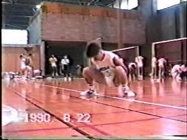
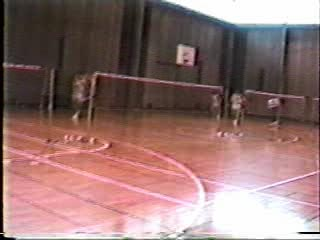
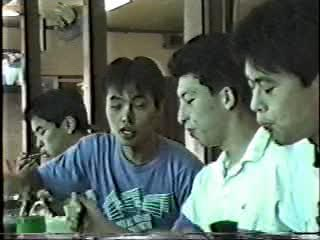
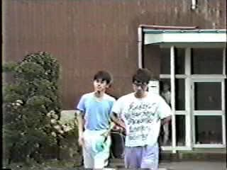
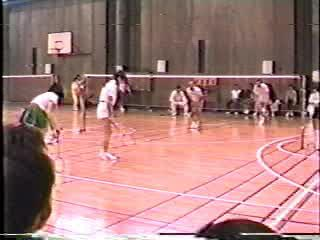
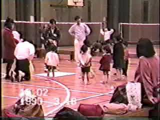
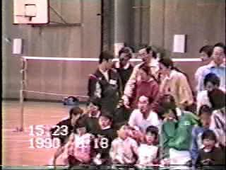

|  |  |  |  |
|
1990年 アニマル（うしろアヒル） (10sec) |
1990年 ダッシュ (12sec) |
1990年 検見川合宿の昼食 (15sec) |
1990年 検見川合宿所宿舎前 (20sec) |
|  |  |  | |
|
1990年 検見川宿舎からクロカンコースへ (10sec) |
1990年3月18日 バドミントン・フェスティバル エキシビション 村田・上野 対 相沢・竹中（旧姓） 戦 (14sec) |
1990年3月18日 バドミントン・フェスティバル 子供たち (10sec) |
1990年3月18日 バドミントン・フェスティバル 集合写真 (10sec) |